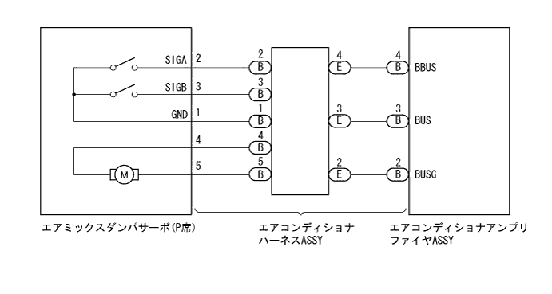

DTC B1441/41 (P Seat) Air Mix Damper Malfunction |
| DTC No. | Diagnosis Description
| Inspection Area |
|---|---|---|
| B1441/41 |
|
|

| Step 1 | Read TaSCAN Data (P Seat Air Mix Target Pulse Count) |
Using SST (TaSCAN), follow the prompts on the screen to display the "ECU Data Monitor" screen and check the computer data.
| Item Name [Item Symbol] | Condition | Reference Value | |
|---|---|---|---|
| P-Seat Air Mix Target Pulse Count [PAMP] | When front passenger side temperature setting switch is operated | Automatic air conditioner |
|
| Dual mode automatic air conditioner |
| ||
| Result | Proceed to |
|---|---|
| Pulse change according to damper operation is abnormal | A |
| Pulse change according to damper operation is normal (when inspecting according to Diagnostic Trouble Code Chart) | B |
| Pulse change according to damper operation is normal (when inspecting according to List by Symptom) | C |
|
| ||||
|
| ||||
| A | |
| Step 2 | Replace Air Mix Damper Servo Sub-assembly |
| NEXT | |
| Step 3 | Read TaSCAN Data (P Seat Air Mix Target Pulse Count) |
Using SST (TaSCAN), follow the prompts on the screen to display the "ECU Data Monitor" screen and check the computer data.
| Item Name [Item Symbol] | Condition | Reference Value | |
|---|---|---|---|
| P-Seat Air Mix Target Pulse Count [PAMP] | When front passenger side temperature setting switch is operated | Automatic air conditioner |
|
| Dual mode automatic air conditioner |
| ||
| Result | Proceed to |
|---|---|
| Pulse change according to damper operation is abnormal | A |
| No Abnormality | B |
|
| ||||
| A | ||
| ||